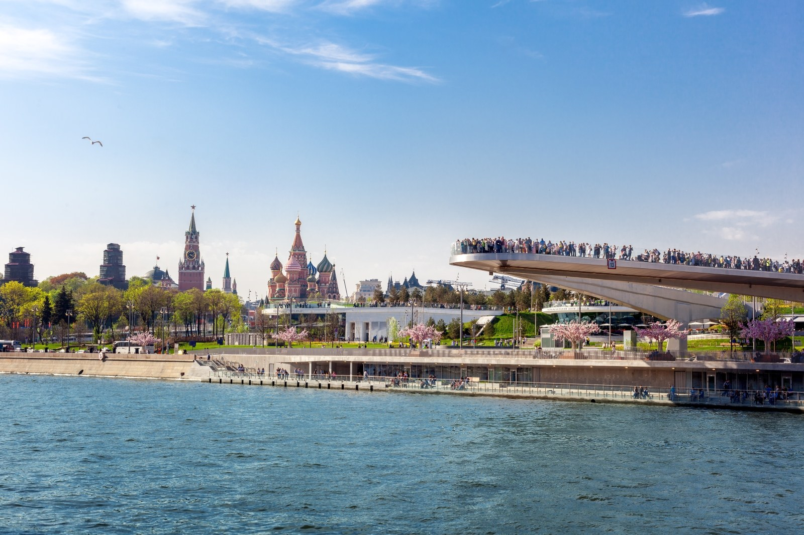
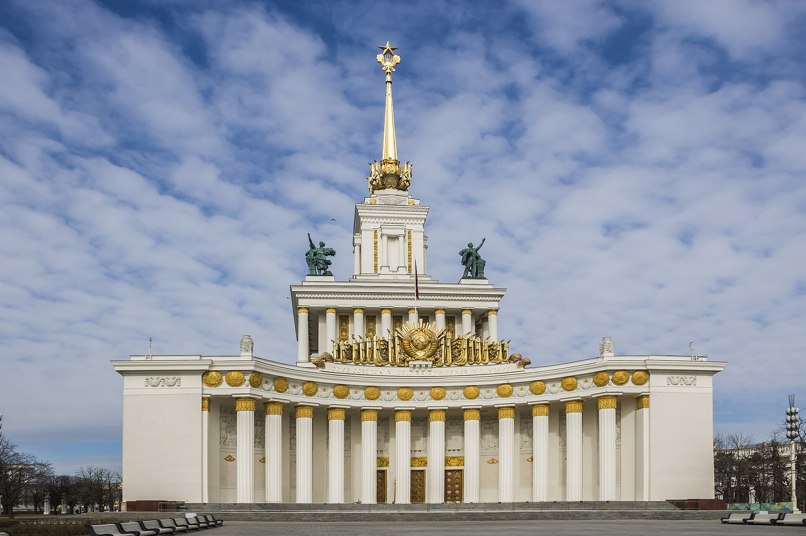

Выходные в Москве
Маршрут на день | Зарядье | Третьяковская галерея

Пройдитесь по парку и дойдите до Парящего моста. С него открывается вид на Москву-реку и центр города.
Ориентир: Улица Варварка, исторический центр Москвы.
Наш план: 1,5-2 часа в спокойном темпе.
Если похолодает: Посмотрите, какие павильоны и программы доступны в выбранный день.
Официальная карта парка ↗Здесь легко провести весь день, поэтому заранее выберите одну часть территории. Для первого знакомства подойдёт прогулка от главного входа к Центральному павильону.
Время маршрута: около 2-3 часов без длительного посещения выставок.
Карта и афиша ВДНХ ↗
